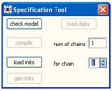
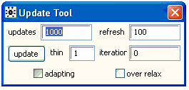
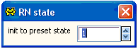
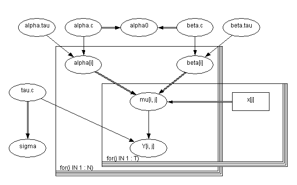
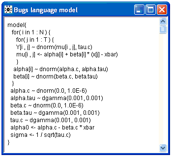
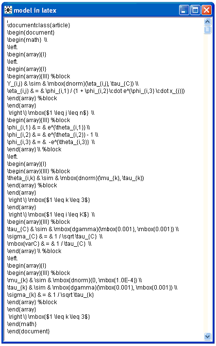
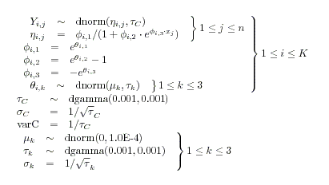
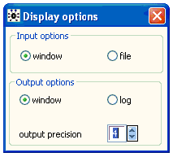
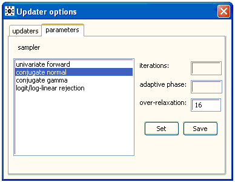

![[modelmenu0]](modelmenu0.bmp) The Model Menu
The Model Menu
Contents
General properties
Specification...
Update...
Save State
Random number generator...
Script
Pretty print
Latex
Input / Output options...
Compile options...
Updater options...
Externalize
Internalize
General properties [top]
The commands in this menu either apply to the whole statistical model or open dialog boxes.
Specification... [top]

This non-modal dialog box acts on the focus view (the window with its title bar highlighted).
check model : If the focus view contains text, OpenBUGS assumes the model is specified in the BUG S language. The check model button parses the BUG S language description of the statistical model. If a syntax error is detected the cursor is placed where the error was found and a description of the error is given on the status line (lower left corner of screen). If no syntax errors are found, the message "model is syntactically correct" should appear in the status line. If text is highlighted, parsing starts from the first character highlighted ( i.e. highlight the word model ), otherwise parsing starts at the top of the window even if the cursor is currently in a different location..
If the focus view is a Doodle or contains a selected Doodle (i.e. the Doodle has been selected and is surrounded by a hairy border ), OpenBUG S assumes the model has been specified graphically. If a syntax error is detected the node where the error was found is highlighted and a description of the error is given on the status line.
load data: The load dat a button acts on the focus view; it will be grayed out unless the focus view contains text and a syntactically correct model has been checked.
Data can be identified in two ways:
1) if the data are in a separate document, the window containing that document needs to be the focus view when the load dat a command is used;
2) if the data are specified as part of a document, the first character of the data (either the word list if in S-Plus format, or the first array name if in rectangular format) must be highlighted and the data will be read starting with the first highlighted character.
See Formatting of data for details of how the data should be formatted.
Any syntax errors or data inconsistencies are displayed in the status line. Corrections can be made to the data without returning to th e check mode l stage. When the data have been loaded successfully, "Data Loaded" should appear in the status line.
The load dat a button becomes active once a model has been successfully checked, and ceases to be active once the model has been successfully compiled.
num of chains: The number of chains to be simulated can be entered into the text entry field next to the caption num of chains . This field can be typed in after the model has been checked and before the model has been compiled. By default, one chain is simulated.
compile: The compil e button builds the data structures needed to carry out MCMC sampling. The model is checked for completeness and consistency with the data. Any inconsistencies or errors are displayed on the status line.
A node called 'deviance' is automatically created which calculates minus twice the log-likelihood at each iteration, up to a constant. This node can be used like any other node in the graphical model.
This command becomes active once the model has been successfully checked. When the model has been successfully compiled, the message ' model compiled ' should appear in the status line.
load inits: The load init s button acts on the focus view; it will be grayed out unless the focus view contains text. The initial values will be loaded for the chain indicated in the text entry field to the right of the caption for chai n. The value of this text field can be edited to load initial values for any of the chains.
Initial values are specified in exactly the same way as data files. If some of the elements in an array are known (say because they are constraints in a parameterisation), those elements should be specified as missing (NA) in the initial values file.
This command becomes active once the model has been successfully compiled, and checks that initial values are in the form of an S-Plus object or rectangular array and that they are consistent with the model and any previously loaded data. Any syntax errors or inconsistencies in the initial value are displayed on the status line.
If, after loading the initial values, the model is fully initialized this will be reported by displaying the message "initial values loaded: model initialized" . Otherwise the status line will show the message "initial values loaded but this or another chain contain uninitialized variables" . The second message can have several meanings:
a) If only one chain is simulated it means that the chain contains some nodes that have not been initialized yet.
b) If several chains are to be simulated it could mean that no initial values have been loaded for one of the chains.
In either case further initial values can be loaded, or the gen init s button can be pressed to generate initial values for all the uninitialized nodes in all the simulated chains. See the 'gen inits' section below for a description of how the values are generated.
Generally it is recommended to load initial values for all fixed effect nodes (founder nodes with no parents) for all chains, initial values for random effects can be generated using the gen init s button.
The load init s button can still be executed once the MCMC sampling has been started. It will have the effect of starting the sampler out on a new trajectory. A modal warning message will appear if the command is used in this context.
gen inits: The gen init s button attempts to generate initial values by sampling either from the prior or from an approximation to the prior. In the case of discrete variables a check is made that a configuration of zero probability is not generated. This command can generate extreme values if any of the priors are very vague. If the command is successful the message "initial values generated: model initialized" is displayed otherwise the message "could not generate initial values" is displayed .
The gen init s button becomes active once the model has been successfully compiled, and will cease to be active once the model has been initialized.
Update... . [top]

This menu will become active after the model has been compiled and initialized. It has the following fields that accept user input:
updates : The number of MCMC samples to save. Thus, update s * thin MCMC updates will be carried out.
refresh : The number of updates divided by thin between redrawing the screen.
thin : The samples from every k th iteration will be used for inference, where k is the value of thin . Setting k > 1 can help to reduce the autocorrelation in the sample, but there is no real advantage in thinning except to reduce storage requirements.
over relax : Click on this box (a tick will then appear) to select an over-relaxed form of MCMC (Neal, 1998) which will be executed where possible. This generates multiple samples at each iteration and then selects one that is negatively correlated with the current value. The time per iteration will be increased, but the within-chain correlations should be reduced and hence fewer iterations may be necessary. However, this method is not always effective and should be used with caution. The auto-correlation function may be used to check whether the mixing of the chain is improved.
Click on the update button to start updating the model. Clicking on the update button during sampling will pause the simulation after the current block of iterations, as defined by refres h, has been completed; the number of updates required can then be changed if needed. Clicking on the update button again will restart the simulation. This button becomes active when the model has been successfully compiled and given initial values.
The iteration field displays the total number of MCMC updates divided by thin that have been carried out.
The adapting box will be ticked while the Metropolis or slice-sampling MCMC algorithm is in its initial tuning phase where some optimization parameters are tuned. The Metropolis and slice-sampling algorithms have adaptive phases of 4000 and 500 iterations respectively which will be discarded from all statistics. For details on how to change these default settings please see the Updater Options section .
When there are multiple chains, a single update is generated for each chain and then the cycle is repeated for the requested number of updates. Random numbers are currently generated from a single random number sequence shared across the chains. When thin>1, thinned updates are drawn from the first chain, then thinned updates are generated from the second chain, and so on. However if thin=1, and the monitored samples are thinned via Inference > Samples , the output
will be different, since we are then looping over chains within each iteration.
Save State [top]
The current state of all the stochastic variables in the model are displayed in S-Plus format with a separate window for each chain. These can be used as an initial value file for future runs.
Random number generator... . [top]

Opens a non-modal dialog box, which is available only after compilation is completed and before any updates have been performed. The state can be changed after initial values are generated but before updates have been performed, however, this is not recommended.
The internal state of the random number generator can be set to one of 14 predefined states using the up down arrows. Each predefined state is 10 12 draws apart to avoid overlap in random number sequences.
Script [top]
The Script menu item is used to execute "batch scripts" from the GUI-mode. If the focus-view contains a series of OpenBUGS batch-mode commands, then selecting the script menu item from the Model menu will cause the script to be executed. A subset of the script commands can be executed by highlighting them. Highlighting part of a batch command will likely produce an error. The script menu item allows batch mode execution to be mixed with GUI execution so batch scripts can be created incrementally and some repetitive tasks under the GUI (e.g., specifying variables to be monitored) can be automated during the model building/testing analysis phase. See Scripts and Batch-mode for more details.
Pretty print [top]
Opens a new window containing the BUGS language code describing the currently checked model. The model can be specified in the BUGS language or as a Doodle . Any comments in the original BUGS language description will be lost. The BUGS langguage code will be formatted in a standardized form.
For example if the model described by this Doodle is checked the pretty print option will open a windows containing the BUGS language code below


Latex [top]
Opens a new window containing Latex code describing the currently checked model. The model can be specified in the BUGS language or as a Doodle . Any comments in the original BUGS language description will be lost.
For example, if the following model is checked then the latex option will produce:
model {
for (i in 1:K) {
for (j in 1:n) {
Y[i, j] ~ dnorm(eta[i, j], tau.C)
eta[i, j] <- phi[i, 1] / (1 + phi[i, 2] * exp(phi[i, 3] * x[j]))
}
phi[i, 1] <- exp(theta[i, 1])
phi[i, 2] <- exp(theta[i, 2]) - 1
phi[i, 3] <- -exp(theta[i, 3])
for (k in 1:3) {
theta[i, k] ~ dnorm(mu[k], tau[k])
}
}
tau.C ~ dgamma(1.0E-3, 1.0E-3)
sigma.C <- 1 / sqrt(tau.C)
varC <- 1 / tau.C
for (k in 1:3) {
mu[k] ~ dnorm(0, 1.0E-4)
tau[k] ~ dgamma(1.0E-3, 1.0E-3)
sigma[k] <- 1 / sqrt(tau[k])
}
}

Processing the latex code gives

Input / Output options... [top]

The model specification tool takes input from the focus window when the Input options is set to window, or from a file menu prompt when the Input option is set to file.
OpenBUGS will either produce output in windows if the Output option is set to window, or produce output in the log window if the Output option is set to log.
The precision to which OpenBUGS displays output is controlled by the output precision field.
Compile options... [top]
compile logicals : OpenBUGS tries to write and compile new Component Pascal classes to represent logical nodes in the statistical model. This option, which can increase execution speed, is available only with GUI execution of OpenBUGS.exe, as it relies on run-time linking This option is not available with native linux execution or programs such as BRugs, which utilize OpenBUGS.so or OpenBUGS.dll.
updater by method : OpenBUGS chooses update algorithms for the model in a "by method" order if this box is checked, otherwise updaters are chosen by order of node name.
use chain graph : OpenBUGS tries to rewrite random effects in terms of a chain graph.
trap on error : Causes OpenBUGS to display a "trap" window when an unidentified error occurs, instead of displaying a short message "Sorry, something went wrong..." in the status bar. Trap windows contain information intended to help programmers fix the source code of OpenBUGS. Therefore some experts may find them useful for identifying difficult errors, but most users will find them more confusing than the default message.
Updater options [top]
Tabbed dialog box for controlling how OpenBUGS updates the model.
The updaters tab is used to influence which updater algorithms are used, while the parameters tab is used to adjust the default parameters of the chosen algorithms.
The updater (sampler) algorithms that OpenBUGS has available are displayed in the list box underneath "sampler". The radio button can be used to enable / disable the selected sampler. The radio buttons are only active before a model has been compiled. They control which algorithms OpenBUGS will consider using when the model is compiled.
Once the model has been compiled, it is possible to change the algorithm used for a node (or a block of nodes) by typing the name of the node (variable) in the text entry box underneath "change updater for", selecting a new updater algorithm from the list and clicking ok. You can see which updaters are being used for each node by clicking Info > Updaters (by name) from the menu bar. The info menu can also be checked after a change is requested to confirm the change was made. There is more information on the resulting list in the Info menu manual page. To change the updater for a block of nodes (from Info>Updaters (by name), enter the name of the first node in the block. A block updater for a block of nodes can only be changed to another block updater for the block of nodes.
![[modelmenu10]](modelmenu10.bmp)
The parameters tab of the dialog lists the actual updater algorithms used in sampling nodes in the compiled model. To change the default parameters of one of these updaters, select it from the list and then edit the appropriate fields. Clicking set will modify the sampling parameters for the duration of the current OpenBUGS session; the default parameters will be restored when OpenBUGS is restarted. Clicking save will make changes to the default parameters of the algorithm persistent across OpenBUGS sessions. Changes to the default parameters can only be made after a model has been compiled.

Externalize [top]
This option writes out all the internal data structures that OpenBUGS has created for a compiled model . It provides a way of "saving" the model for future use. The user is prompted to enter a filestem name in a dialog box and a file called 'filestem.bug' is created in a folder called "Restart" in the OpenBUGSxxx program folder. If there were no errors when saving the compiled model, the message "model externalized to file ok" is displayed in the status bar.
The output files can be very large; users should remove these files when they are no longer needed. Script commands (see Scripts and Batch-mode ) are a better method for creating re-producible results, especially if these results need to be sent to other users.
Internalize [top]
This option reads in all the internal data structures that OpenBUGS needs to re-create an executing model from a file created by Externalize. It provides a way of "restarting" the model for further use. This option will open a window containing a BUGS language description of the restarted model and all the tool dialogs will be restored to the state when the model was last executed. If there were no errors when internalizing the saved model, the message "model internalized from file ok" is displayed in the status bar.